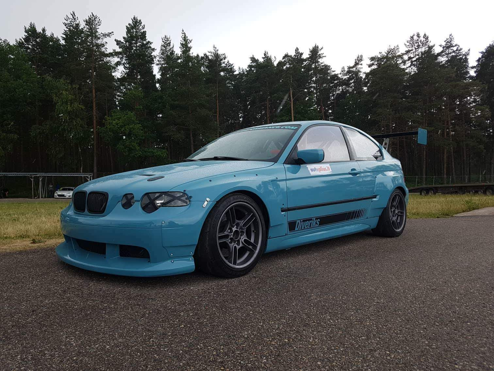

BMW (Bayerische Motoren Werke AG) is a German multinational company which produces luxury vehicles and motorcycles. The company was founded in 1916 as a manufacturer of aircraft engines, which it produced from 1917 until 1918 and again from 1933 to 1945. Automobiles are marketed under the brands BMW, Mini, and Rolls-Royce, and motorcycles are marketed under the brand BMW Motorrad.
